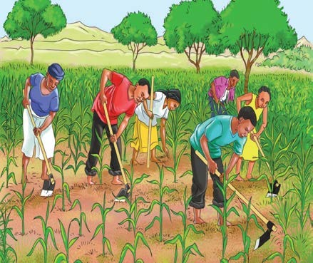

Kilimo
Kilimo ni shughuli inayohusisha uzalishaji wa mazao ya chakula na biashara. Wakulima hujihusisha na kilimo cha mazao kama vile mahindi, mpunga, maharagwe, migomba, viazi, korosho, karanga, mkonge, michikichi na pamba. Baadhi ya jamii za wakulima ni Wahehe, Wanyakyusa, Wanyamwezi, Wahaya, Wazigua, Wasukuma, Wapogoro, Wayao, Waluguru na Waha.

Maswali
| Zao | Matumizi |
|---|---|
| Mahindi | |
| Mpunga | |
| Migomba | |
| Mkonge |
Shughuli ya tano
Uliza watu wanaokuzunguka kuhusu mazao yanayolimwa katika jamii yako.